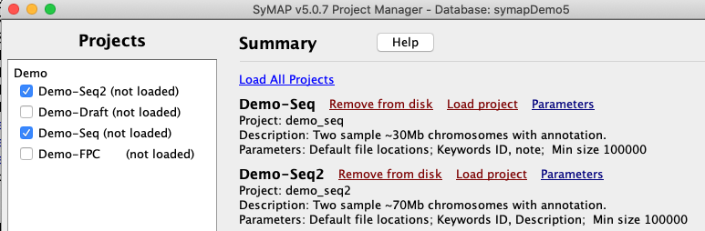
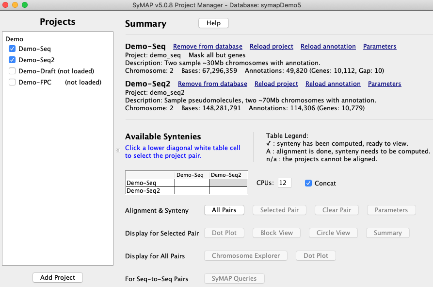
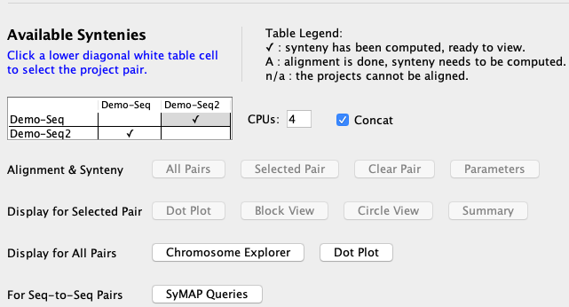
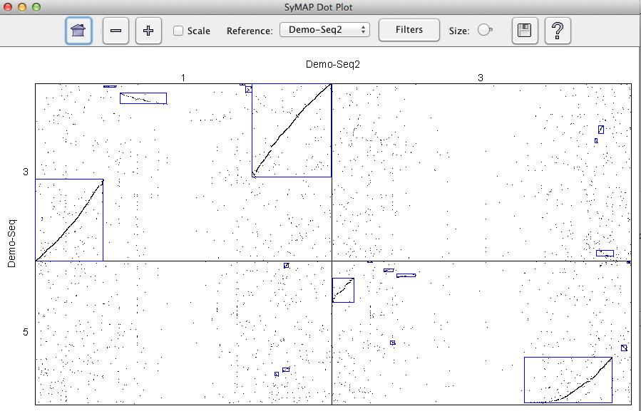
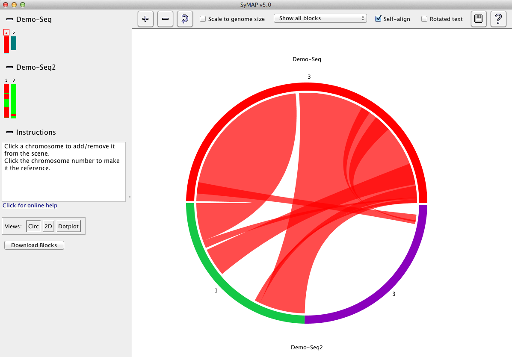
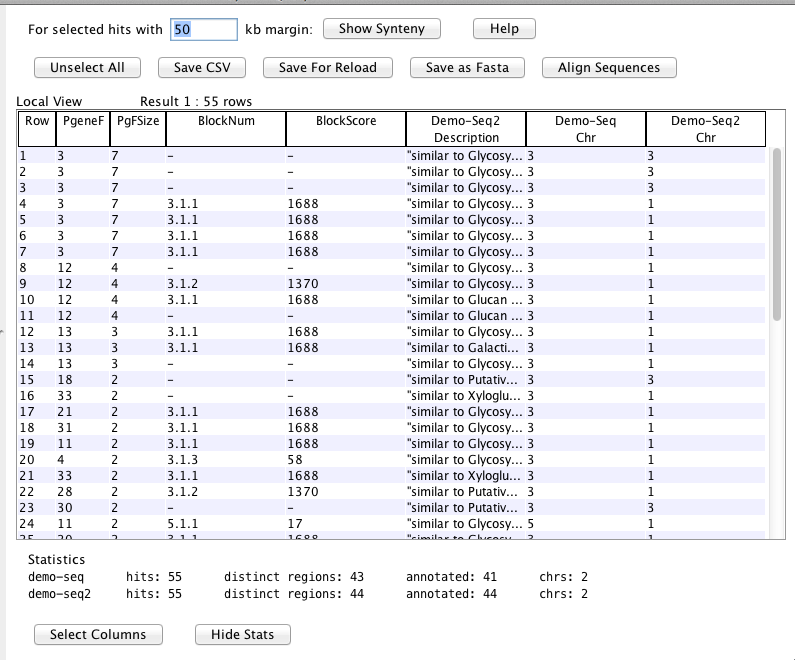
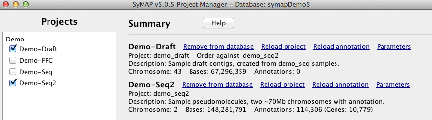

Change into the symap_42 directory.
- If you have mySQL on your machine, then edit symap.config and enter database
and host information (see SyMAP and MySQL).
- If you have Java 3D on your machine,
then enter ./symap
else enter ./symap -no3d
Many lines of text will print to the console, as SyMAP launches the
supplied MySQL database. When this is done,
the Project Manager window opens, shown at right.
|
|
(Click Images for larger version)
|

|
| |
|
There are four demo projects listed on the left. Check "Demo-Seq" and "Demo-Seq2".
A link "Load All Projects" will be displayed in the top of the right panel; select it to
load the projects, which will take several minutes; when done, the Manager will look as
shown in the image.
In the "Available Syntenies" table, click the cell for the
"Demo_Seq2" row and the "Demo_Seq" column. If you have two CPUs
available, set the "CPUs" setting to "2". Then click the
"Selected Pair" button to start the alignment.
|

|
| |
|
The alignment will take about 30 minutes (15 with two CPUs).
When done, the table will have a checkbox, signifying that
the synteny is available for viewing. Click the cell
again which will enable the viewing buttons, e.g "Dot Plot".
|

|
| |
|
Click "Dot Plot" and you will see the dot plot shown
here. By clicking and/or selecting regions you can
zoom into certain regions and bring up detailed views
of the alignments. The Help button (question mark)
provides full information on the functions.
|

|
| |
Return to the Manager, and click the "Chromosome Explorer"
button. This brings up the Explorer, shown at right.
(If this does not work, restart with symap -no3d; the 3D view on the right
will not be available).
Here you can pick different
sets of chromosomes, using the small icons at left, and see them in different views.
At first you only see the reference chromosome, which is initially chr3 from Demo-Seq
(the reference has a red box around its number).
Click on the icons for Demo-Seq2 chr1 and chr3, to see the 3D view at right.
The ribbons represent synteny blocks (green for inverted).
|

|
| |
|
Click the "Circle" button to see a Circos-style3 display
of the same chromosomes:
|

|
| |
|
Click the 2D button to see a side-by-side view of
the same chromosomes. Note that the reference is in the middle.
Brown lines show the individual anchors (see
how symap works).
|

|
| |
|
Selecting a region on one of the sequence tracks using the
mouse zooms to that region.
Now the annotation icons (blue) for individual genes can be seen
in the center of each sequence track.
If you zoom in even closer, then you can click the "Sequence Filter"
button and the top of a sequence track (or right click in the sequence),
and check "Show Descriptions
for Annotations", and you will see the annotation text
for each gene.
|

|
| |
|
Returning to the Manager, click the "SyMAP Queries" button. This brings up
the SyMAP Query window in Overview mode. Click the "Query Setup" option
on the left-hand side and you will see the Query Setup window:
The query does two basic things:
A. Locate syntenic regions based on annotation
B. Create putative gene families across the
species by grouping the genes (or regions) which
are connected by anchors.
|

|
| |
|
Enter "glycosyl" for the "Annotation String Search" and press "Do Search".
55 results are returned. Click the "PgFSize" column header to sort by
this column, giving the table at right:
Each row is an anchor connecting two of the chromosomes.
At the top of the table are 7 anchors grouped into a putative
family (PgeneF=25 in the image, but it may
be numbered differently when you run it).
The rows with a non-empty "BlockNum"
are anchors involved in synteny blocks. You could restrict the query
to only these anchors, if desired. Synteny anchors are more likely
to represent a true ancestral relationship; however, synteny blocks
can not always be detected in sparser regions.
If you query with more than two species, you can ask interesting
questions such as "show me the glycosyl-related gene families which
are present in species A and B but not in species C".
|

|
| |
|
The remainder of the demo relates to draft sequence, i.e. unanchored
shotgun sequence. If you aren't working with draft sequence,
you can skip to Creating a New Project.
|
| |
|
Return to the Manager and load the Demo-Draft project, following
the same steps used to load the previous two projects.
On the Summary List, under the Demo-Draft listing, you will see
the parameter "Order Against: demo_seq". With this setting,
the Demo-Draft contigs will be ordered using synteny to
Demo-Seq, as soon as that alignment is run.
|

|
| |
|
Use the "Selected Pair" button to align Demo-Draft and Demo-Seq,
as before. The alignment will take about 20 minutes.
When done, open the dot plot for this pair and you will
see that the draft contigs have been ordered and oriented
to agree with the Demo-Seq. (For real projects the agreement will
not be so good!)
|

|
| |
|
The ordering on Demo-Draft is in the database only; it does
not change the sequence files on disk.
However, SyMAP does write out ordered "pseudomolecule" files
created from the draft contigs. These are put in the form
of a new SyMAP project which can be loaded and aligned. You
will see this new project in the Projects panel, as shown
at right.
A text file showing the ordering information is also written to
the Demo_Draft project directory, which you can find under the
data/pseudo subdirectory of the symap directory.
|

|
This is the end of the demo.
At this point you will probably want to proceed by reading the next
section to learn how to create your own project in SyMAP.
|


{kind=link}
{kind=link}
{kind=link}
{kind=link}
{kind=link}
{kind=link}
{kind=link}
{kind=link}
{kind=link}
{kind=link}